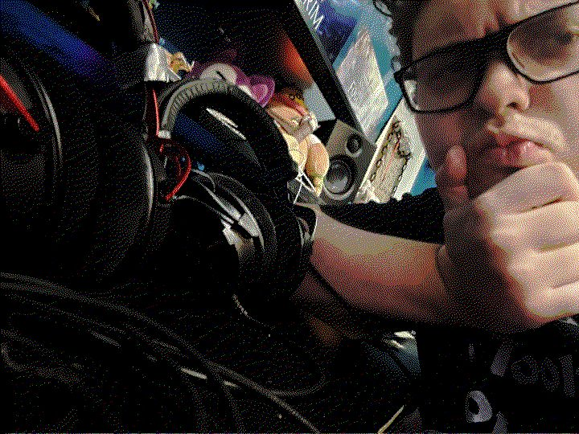

Hey! Funk today is somewhat of a rant and I wanted to give my thoughts about it. Something that has always bothered me is how some people will recommend the most boujie audio equipment to people who could not describe to you the difference. There's nothing wrong with enjoying high-fi audio, but STOP telling people who don't understand it that it's the logical decision. There exists a good middle ground for those out there who just want better, but don't want to burn a hole through their pockets.
In this Funk, I'm going to do more than just a simple rant. I'm going to curate some options for you peeps out there who just want some convenient quality.

Maono A04
For around $50, you can get a surprisingly good mic WITH A MIC ARM. If you are wanting to sound better than your $15 dollar headset, this is what I would recommend. I wouldn't recommend this for professional work, but I do think its good enough to get you started! However, I recommend this microphone to anyone that's looking to sound better on Discord or online games.
Samson Meteor
For around $20, you can also pick up this microphone. It's not as good as the Maono, but for the price, this thing is really impressive. I can't believe how good this thing sounds, but it does have some issues. Mine generates some audible beeping noise that can heard when sitting silent. It's not at all good for professional applications, but it is amazing for casual ones!
Just do your best to place it in a good spot to pick you up.
HyperX Clouds III
These are a surprisingly nice pair of $50ish headphones marketed towards the gamers. Most gaming headsets have boosts in the low end, but these are relatively flat! Personally though, I do not recommend using the mic if you can! It is better than most headset mics, but this is where they cheaped out.
Audio-Technica ATH-M20x
If you want some headphones that can actually be used professionally, these $60 cups are FANTASTIC. If you picked up one of the previous microphones or already have one, I would recommend these to you. They have a really good sound and I don't think they are uncomfortable. They certainly are not the most comfortable, but I can wear these for hours without any issue.